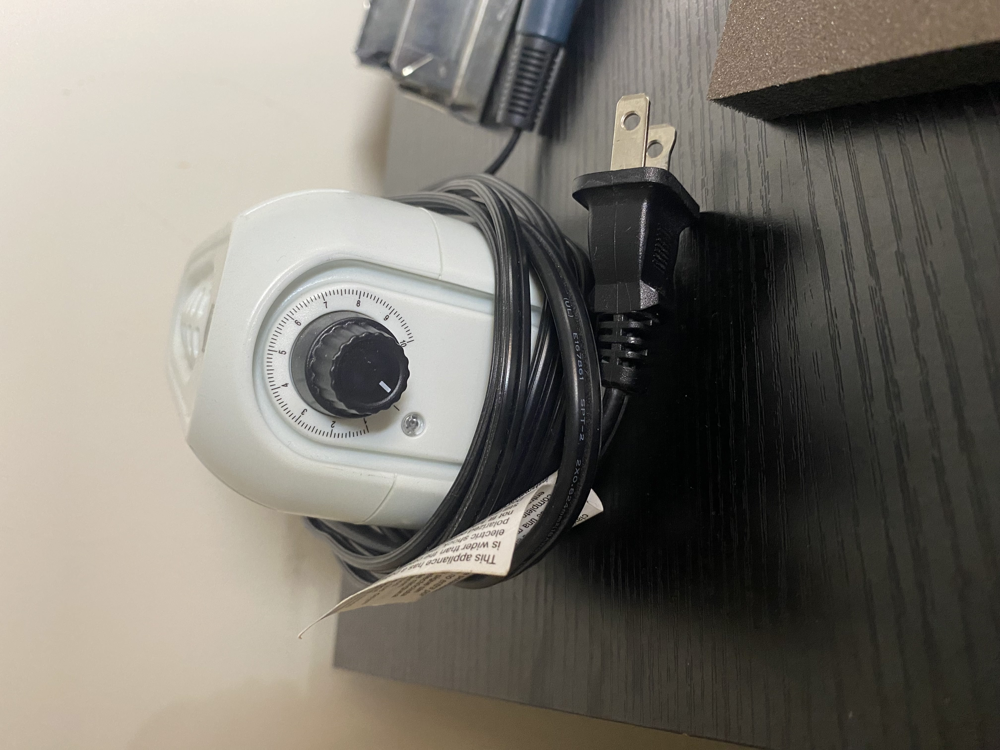

How to Create a Woodburning
Preparation
- Sand your piece of wood on all sides till it’s nice and smooth.
- Select the tip you want to burn with and plug it into the burner.
- Turn the dial on the burner and let it heat up. It may take a minute or too.
Tip: Test the burner with a scrap piece of wood and burn something random
